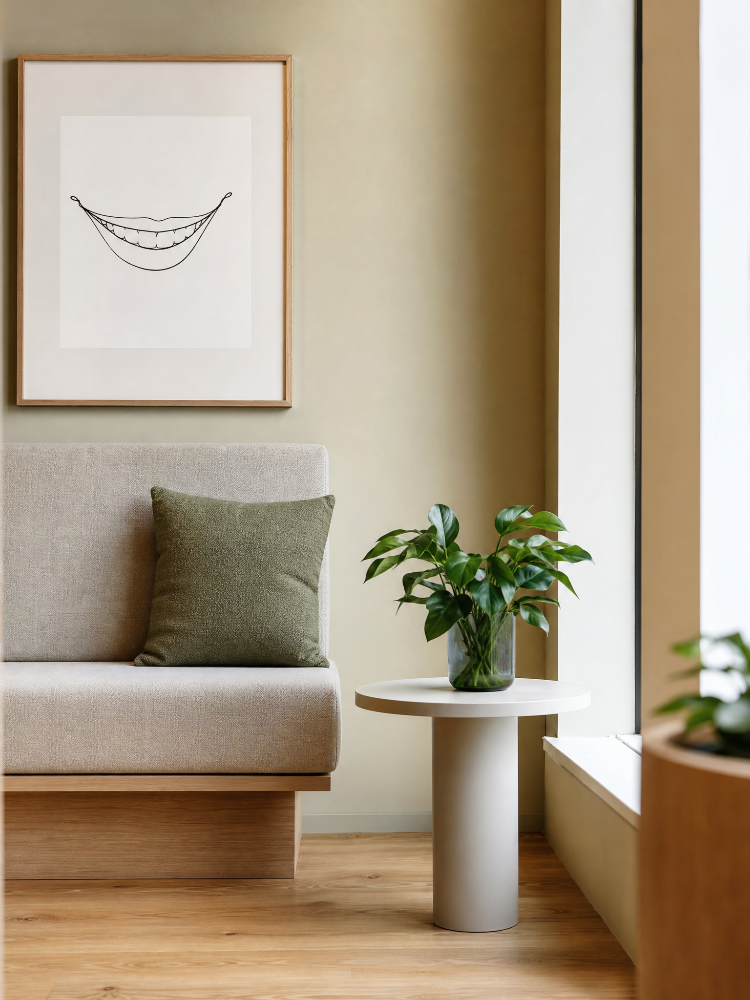

Wij zijn Samen Mondzorg — een team van betrokken tandartsen en mondhygiënisten in Amsterdam-Noord, met aandacht voor de mens achter het gebit.

Bij Samen Mondzorg geloven we dat goede mondzorg begint met écht luisteren. We nemen ruim de tijd voor een eerste kennismaking, zodat we elkaar leren kennen voordat we beginnen met behandelen.
Onze praktijk is bewust kleinschalig ingericht. Vaste gezichten, een vast team — zodat je vertrouwen kan opbouwen en weet wat je krijgt.
We werken volgens de nieuwste richtlijnen, met moderne apparatuur, en blijven onszelf scholen om altijd zorg op het hoogste niveau te kunnen bieden.
Ervaren professionals die werken vanuit dezelfde gedachte: rust, kwaliteit en oprechte aandacht.
BIG-geregistreerd. Gespecialiseerd in esthetische tandheelkunde en restauratieve zorg. Tien jaar ervaring in Amsterdam.
BIG-geregistreerd. Bijzondere interesse in endodontologie (wortelkanaalbehandelingen) en pijnbestrijding.
Speciaal opgeleid in preventieve zorg, parodontologie en het begeleiden van angstige patiënten.
Eerste aanspreekpunt voor afspraken, verzekering en al je vragen over de praktijk.
Zorgt dat behandelingen soepel en steriel verlopen, en helpt je op je gemak voelen tijdens een bezoek.
Begeleidt vooral onze jongere patiënten — met geduld, uitleg en een geruststellende lach.
Vaste gezichten, geen wisselende tandartsen.
Heldere offertes, geen verrassingen achteraf.
Avondopeningen en korte wachttijden.
Kinderen, gezinnen, angstige patiënten — welkom.